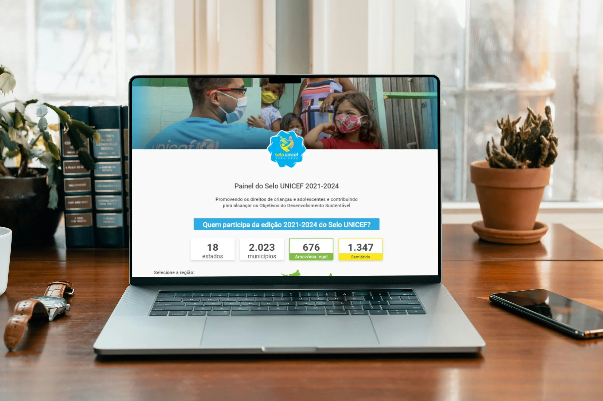

Work / Selo UNICEF
Selo UNICEF Making social impact data usable
Designed a B2B platform that turns fragmented public sector data into clear, role-based workflows for UNICEF coordinators and municipal teams. Led UX and UI from discovery to delivery, including a scalable design system

The Background
Selo UNICEF is an initiative that supports Brazilian cities in improving the quality of life of children and adolescents through measurable goals in areas such as health and education. To support this mission, UNICEF needed a centralized digital platform that would help coordinators and municipal teams monitor indicators, track progress, and coordinate local actions.
The challenge was to bring together fragmented information, complex public-sector data, and multiple user profiles into a unified experience. The platform needed to make critical information accessible and actionable for everyone involved, from UNICEF coordinators to municipal managers, school professionals teams.
Problem
UNICEF coordinators and municipal teams needed a centralized platform to track vulnerable municipalities. The core challenge was not just displaying data, but highlighting areas where urgent public action was needed, such as vaccination gaps and child protection.
Solution
I designed the Selo UNICEF platform as an intuitive, role-based system that organized complex indicators into practical tasks, alerts, and reports for each profile. The experience aligned data views with real responsibilities: program oversight for UNICEF coordinators, and follow-up of school activities for municipal articulators. I also built a design system from scratch to keep patterns consistent across modules, reduce delivery risk, and support future growth.
Interviews
I conducted semi-structured interviews with the coordinators of each of the 7 Systemic Results (RS1–RS7), and also talked with teachers and school coordinators to understand the difficulties in their journeys. The goal was to understand how they currently monitored indicators, validated data, and reported progress. I focused on mapping real decision points, the tools they used daily (like spreadsheets), and moments where data gaps forced manual workarounds.
FINDING 1: Different Profiles, Different Needs
Managers required macro-level dashboards for decision-making, while schools needed micro-level task tracking.
FINDING 2: Lack of Visual Feedback
Users felt insecure when data was updated without clear status indicators or confirmation, leading to redundant manual checks.
FINDING 3: Technical Jargon
The data came from complex APIs with technical fields that were not translated into human, actionable language for the end-users.
Surveys
To cross-check the interview findings, I ran a short survey with 13 respondents: 8 coordinators, 2 municipal staff and 3 school staff. I asked participants to rank which indicators and actions mattered most for their roles, and to rate early navigation and dashboard concepts.
INSIGHT 1: Data Trust
Users needed clear visual feedback on data freshness. Knowing when the data was last updated was crucial to trust the indicators.
INSIGHT 2: Task Prioritization
Managers were overwhelmed by raw numbers. They needed the system to highlight which municipalities or schools required immediate action.
INSIGHT 3: Role-Based Views
Municipal and school teams only wanted to see indicators related to their daily routines, not the entire macro view of the platform.
Personas
I created behavior-based personas to align the team on who we were designing for. Instead of demographic labels, I defined the three main audiences by what drove their decisions and what caused friction in their daily work:
- The UNICEF Coordinator: Needs a macro view of data and progress to manage resources, engage municipalities, and report on the program's impact.
- The Municipal Articulator: Plans school support from the education secretariat before going to the field. Needs a clear, real-time view of which schools have pending activities and agile tools to send reminders to principals. In rural areas, with unstable internet, his phone is mainly used for WhatsApp communication, not for consulting the platform.
- The Pedagogical Coordinator: Needs a simple platform to map student vulnerabilities and report daily data without technical barriers, as they have low tech affinity and are overwhelmed with daily school tasks.
These personas became a practical tool to evaluate every screen, ensuring the interface adapted to different levels of digital literacy and real-world constraints.
Customer Journey
The end to end journey started when a municipality or partner program needed to track progress against UNICEF Seal criteria and coordinate actions across education and health. Data flowed in from multiple APIs and partners, then stakeholders reviewed indicators to identify gaps, assign responsibilities, and follow up on interventions. The biggest pain points appeared at handoffs, when one team expected another to act but the platform did not yet clarify ownership or timing. The final journey map highlighted moments where the system needed to shift from reporting to action, especially around alerts, status tracking, and evidence for audits.
User Flow & CSD Matrix
Before jumping into UI design, I aligned the team using a CSD Matrix (Certainties, Suppositions, and Doubts) to identify our biggest risks and structure the user interviews. Once the research validated these assumptions, I translated the findings into a comprehensive User Flow. This flow mapped the navigation between high-level indicators (for managers) and the 7 Systemic Results (RS1 to RS7), ensuring that users could easily drill down from a macro overview to specific, actionable tasks without getting lost in complex data.
MVP
Initially, stakeholders aimed for a complete, feature-rich application, and an MVP phase was not planned. However, after presenting the first interface concepts, expectations grew, and the scope expanded significantly. Combined with a tight development timeline, we realized the original roadmap was no longer viable.
To ensure we delivered a functional product on time, I led the rollback to define a strict MVP. I collaborated with the team to weigh which features aligned with the strategic goals against the actual development effort. I prioritized the core user journeys and essential features, creating a solid action plan that guaranteed the platform's launch without compromising the user experience.
Usability Testing
To validate the new journey, I held sessions with stakeholders and with the coordinators of each Systemic Result. They were the domain experts who knew the daily routines and deliverables required from the municipalities. We walked through the journey to identify friction points, check whether the information architecture matched real-world logic, and make sure the flows were solid before development. School staff shaped the journey through the earlier interviews, and a natural next step is validating the interface directly with them.
Problem 1
The user journey was broken for educators and agents, lacking clear checkpoints for deliverables.
Solution 1
I restructured the information architecture, creating specific tasks and progress trackers so each role knew exactly what to deliver and when.
Problem 2
Schools and municipalities submitted their activities through multiple external platforms. It was hard to know where each activity should be sent, which led to errors and lack of trust during the validation process.
Solution 2
I designed the Selo so that each activity displays, right next to it, a direct link to the platform where it must be submitted. This made the right place easy to find and reduced submission errors.
UI Design
I designed a web-first experience. The Selo platform’s role is to display data: schools carry out their activities on multiple external platforms, and the Selo consumes those APIs and shows the results. That is why the interface prioritizes reading, monitoring and follow-up over data entry. I applied the core components of the Design System created for this project— ensuring accessible color contrasts, clear data tables, and intuitive dashboard cards. The final interface reflects a deep understanding of the user's context: it minimizes cognitive load by using progressive disclosure, allowing users to see high-level indicators first and drill down into granular data only when necessary.
Design System
To ensure visual consistency and accelerate development across the platform's complex modules, I built a comprehensive Design System from scratch. It was designed to serve not just this platform, but to scale for future UNICEF projects, aligning accessibility standards with the organization's brand identity.
I created a robust library of responsive components—including typography, colors, design tokens, data tables, form inputs, and interactive states—all documented with clear usage rules. This system allowed engineers to reuse code, reduced design debt, and ensured a seamless, intuitive experience for users across all roles.
Learnings
- Scope is a design decision. When expectations grew after the first concepts, I led the rollback to a strict MVP. I learned to anchor stakeholder conversations in user journeys, not feature lists, so trade-offs become visible.
- Data design is language design. The APIs returned technical fields that meant nothing to users. Translating them into actionable language, and showing when data was last updated, mattered as much as the visual layer.
- When you design on top of other systems, connect the dots. Activities were submitted on several external platforms, and the Selo consumed their APIs. A direct link beside each activity made the right destination easy to find and reduced errors. Clear status and freshness indicators became part of the interface.
- Validate with the people who know the operation, and name the limits. The coordinators of each Systemic Result gave fast, reliable feedback on flows. Reaching school staff directly in the validation step is what I would add next.
Next Steps
- Implement customizable dashboards, allowing each user role to pin the specific indicators and actions they monitor weekly.
- Introduce automated data quality monitoring to flag missing updates or anomalies, guiding users on the next best action.
- Expand the Design System documentation for engineering, adding clear accessibility guidelines and code-ready component usage examples.
Business Impact
The Selo UNICEF runs in four-year editions, and I built the panel for the 2021–2024 edition. The digital platform was the backbone that enabled public managers to monitor and act on critical indicators. By transforming fragmented APIs into clear, role-based workflows, it allowed municipalities to track their data efficiently and know what to do next. Compared to the previous edition (2017–2020), the 2021–2024 cycle reached:
934
Cities certified
17.7%
Increase in vaccination coverage
60x
Increase in child protection via Sipia
"The design system and the structured UI brought a level of technical consistency that is rare to see. It allowed our engineering team to integrate multiple fragmented APIs into a seamless, reliable platform for the municipalities."
- - Daniel Barboni, ICT Officer at UNICEF
"This system completely changed how we communicate with the municipalities. The intuitive interface and the design system brought a level of consistency and transparency that made it easier to monitor deliverables and ensure that every child's indicator was being properly tracked."
- - José Gilberto R. Boari, Public Policies & Social Projects Analyst at UNICEF